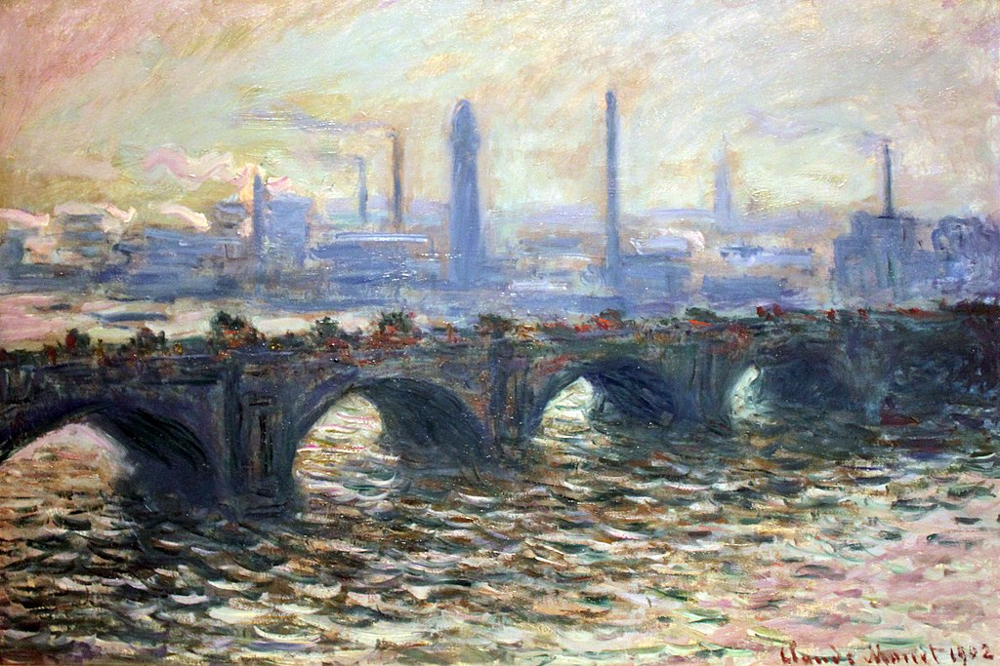

<head>
<meta charset="UTF-8" />
<meta name="keywords" content="drawing, painting" />
<meta name="description" content="drawings by Sunjy" />
<title>Sunjy</title>
<link rel="shortcut icon" type="image/x-icon" href="../../mImages/mCommon/favicon.ico" media="screen" />
<link rel="stylesheet" type="text/css" href="../../mCsses/mCommon/mCssA.css" />
<link rel="stylesheet" type="text/css" href="../../mCsses/mCommon/mCssB.css" />
<link rel="stylesheet" type="text/css" href="../../mCsses/mCommon/mCssC.css" />
<link rel="stylesheet" type="text/css" href="../../mCsses/mCommon/mCssD.css" />
<link rel="stylesheet" type="text/css" href="../../mCsses/mContent/mCssA.css" />
<link rel="stylesheet" type="text/css" href="../../mCsses/mContent/mCssB.css" />
<link rel="stylesheet" type="text/css" href="../../mCsses/mContent/mCssC.css" />
<link rel="stylesheet" type="text/css" href="../../mCsses/mContent/mCssD.css" />
</head>
<script type="text/javascript" src="../../mScripts/mContent/mContentAA.js" /></script>
<script type="text/javascript" src="../../mScripts/mContent/mContentAB.js" /></script>
<script type="text/javascript" src="../../mScripts/mContent/mContentAC.js" /></script>
<script type="text/javascript" src="../../mScripts/mContent/mContentAD.js" /></script>
<script type="text/javascript"></script> 
<script type="text/javascript">
document.write('<div class="mImgAbsolute"></div>');
/*
document.write('<p class="mFontSizeBColor" />From a white paper...</p>');
document.write('<table class="center"><tr><td>');
document.write('');
document.write('</td></tr></table>');
*/
</script>


<script type="text/javascript">
document.write('<p class="mFontSizeBColor" />Waterloo Bridge </p>');
document.write('<p class="mFontSizeSColor" />Waterloo Bridge by Claude Monet depicts the former bridge, not today’s Waterloo Bridge. In the 1930s London County Council decided to demolish the bridge in this painting and replace it with a new structure. This painting shows the first bridge on the site, which opened in 1817. The granite bridge had nine arches, separated by double Doric stone columns. The new bridge opened in 1945 and remains in use today.<br><br>When Waterloo Bridge first opened in 1817, it acted as a bridge between the elegant north side of the Thames River, where the Savoy Hotel was located, and the south side, which was the home of industrial factories during that era.<br><br>Monet Series<br><br>Monet’s first series exhibited as such was of Haystacks, painted from different points of view and at different times of the day. Fifteen of the paintings were exhibited in 1891. In the next year, he produced what is probably his best-known series, twenty-six views of Rouen Cathedral. In these paintings, Monet broke with tradition by cropping the subject. Only a portion of the façade is seen on the canvas. The pictures do not focus on the famous building, but on the play of light and shade across its surface as it transformed the Cathedral façade.<br><br>Monet had a passion for creating images of the passing of time, as seen in the movement of light over the same forms. Monet’s many series include the following subjects:<br>•Haystacks<br>•Rouen Cathedral<br>•Poplars<br>•Mornings on the Seine<br>•Water Lilies<br>•Venice<br>•The Houses of Parliament, London,<br>•Charing Cross Bridge, London<br>•Westminster Bridge, London<br>•Waterloo Bridge Series<br>•Weeping Willow Series<br></p>');
document.write('<table class="center" /><tr><td>');
document.write('<br>When Waterloo Bridge first opened in 1817, it acted as a bridge between the elegant north side of the Thames River, where the Savoy Hotel was located, and the south side, which was the home of industrial factories during that era.<br><br>Monet Series<br><br>Monet’s first series exhibited as such was of Haystacks, painted from different points of view and at different times of the day. Fifteen of the paintings were exhibited in 1891. In the next year, he produced what is probably his best-known series, twenty-six views of Rouen Cathedral. In these paintings, Monet broke with tradition by cropping the subject. Only a portion of the façade is seen on the canvas. The pictures do not focus on the famous building, but on the play of light and shade across its surface as it transformed the Cathedral façade.<br><br>Monet had a passion for creating images of the passing of time, as seen in the movement of light over the same forms. Monet’s many series include the following subjects:<br>•Haystacks<br>•Rouen Cathedral<br>•Poplars<br>•Mornings on the Seine<br>•Water Lilies<br>•Venice<br>•The Houses of Parliament, London,<br>•Charing Cross Bridge, London<br>•Westminster Bridge, London<br>•Waterloo Bridge Series<br>•Weeping Willow Series<br>" />');
document.write('</td></tr></table>');
</script>


